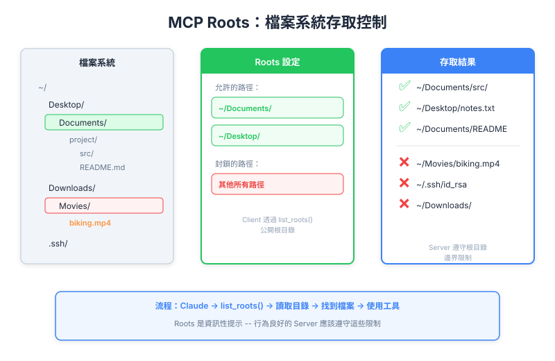

| Item | Detail |
|---|---|
| Exam Domain | D2 — Tool Design & MCP Integration (18%) |
| Task Statements | 2.2 (MCP security model), 2.3 (MCP server capabilities) |
| Source | model-context-protocol-advanced-topics / 02-roots-and-messages / Lesson 07 |
Roots 是 MCP 告訴 server「你可以看這裡，只有這裡」的方式 — 同時解決檔案發現的易用性問題和無限制存取的安全問題。

把 roots 想成辦公大樓的門禁卡：
| 概念 | 大樓類比 | MCP 對應 |
|---|---|---|
| Root | 門禁卡授權進入 3 樓和 7 樓 | Client 說「你可以存取 /projects 和 /data」 |
| 有 roots 的 Server | 持卡員工 | Server 知道要搜尋哪些目錄 |
| 沒有 roots 的 Server | 沒卡的訪客 | 必須詢問確切房號（完整檔案路徑） |
| Enforcement | 每層樓的閘門 | is_path_allowed() 函式（必須自建） |
關鍵洞察：門禁卡本身不鎖門 — 閘門才鎖。同樣地，roots 告訴 server 該去哪裡，但 enforcement 必須另外實作。
沒有 roots 時，使用者必須提供確切路徑：
- 「讀取 /Users/reed/Documents/projects/my-app/src/components/Header.tsx」
有 roots 時，使用者只需說：
- 「讀取 Header.tsx」
Server 知道要在核准的目錄內搜尋。
沒有 roots 時，MCP server 可能存取系統上任何檔案：
- 個人文件、SSH key、含密碼的環境檔案
有 roots 時，server 的範圍被限制在核准的目錄。
Key Insight
Roots 解決的問題和 Google Drive 或 Dropbox 的「資料夾權限」相同 — 定義工具可以看到的邊界。作為 PM，如果你的產品處理檔案，roots 就是實作最小權限存取的機制。
使用者從不需要打完整路徑。Server 從不看核准目錄以外的地方。
這是 PM 必須傳達給工程團隊的最重要細節：
MCP SDK 不會自動強制 root 邊界。
SDK 提供核准 roots 的清單。但技術上沒有任何機制阻止 server 忽略清單而存取其他檔案。你的工程團隊必須自建 enforcement。
| SDK 提供的 | 團隊必須建的 |
|---|---|
| Root 發現機制 | 存取控制驗證 |
| 核准目錄清單 | Path traversal 防護 |
| 標準 URI 格式 | Symlink 解析 |
PM 行動項目：在 PRD 中明確要求存取檔案的 tool 必須實作路徑驗證。不要假設 SDK 會處理。
Code review MCP server 需要讀取原始碼。沒有 roots 時：
- 使用者必須為每個檔案貼上完整路徑
- Server 可能意外讀取含 API key 的 .env 檔案
有 roots 時：
- Client 將 server 指向 repository root
- Server 在 repo 內自然搜尋
- Repo 外的檔案不可存取（有 enforcement 時）
開發者同時做三個專案。Client 設定三個 roots：
- /projects/frontend（React app）
- /projects/backend（Python API）
- /projects/shared（共用函式庫）
Server 可以跨三個專案搜尋，使用者不需切換上下文。
審查存取檔案的 MCP tool 設計時，確認：
list_roots()is_path_allowed()）.. 和 symlinks）list_roots() 如何啟用檔案發現| Front | Back |
|---|---|
| MCP roots 解決哪兩個問題？ | 易用性（不需完整路徑）和安全性（限制 server 存取核准的目錄） |
| MCP SDK 會自動阻止 server 存取 roots 外的檔案嗎？ | 不會 — SDK 提供 root 清單但不強制邊界；開發者必須實作驗證 |
| PM 對 roots 的關鍵行動項目是什麼？ | 在 PRD 中明確要求路徑驗證 — 不要假設 SDK 會處理 |
| Roots 的安全類比是什麼？ | 大樓門禁卡 — 告訴你可以去哪，但閘門（enforcement code）必須另外建 |
| Roots 如何改善使用者體驗？ | 使用者說「找設定檔」而非打完整路徑 — server 在核准目錄內搜尋 |
| Client 可以設定多個 roots 嗎？ | 可以 — 例如同時指向多個專案目錄 |
| Roots 最大的安全風險是什麼？ | Server 收到 roots 但不驗證路徑 — path traversal 攻擊可逃出 root 邊界 |
| 哪個考試哲學適用於 roots？ | Validation > Trust — 不要假設 server 會自我限制；加上程式化 enforcement |